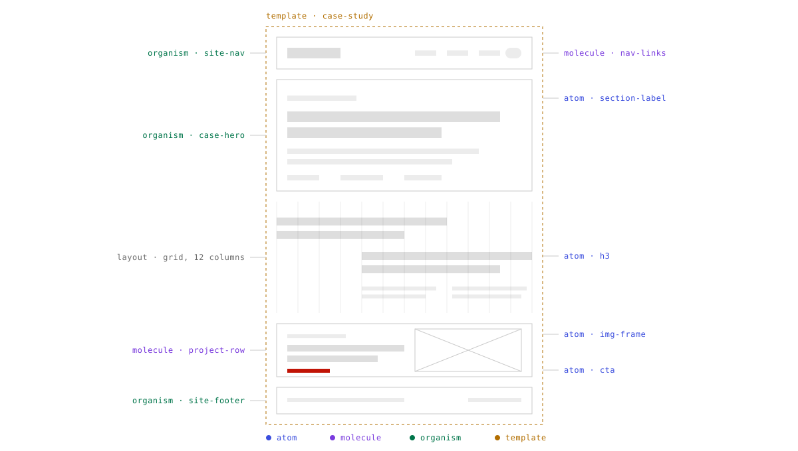
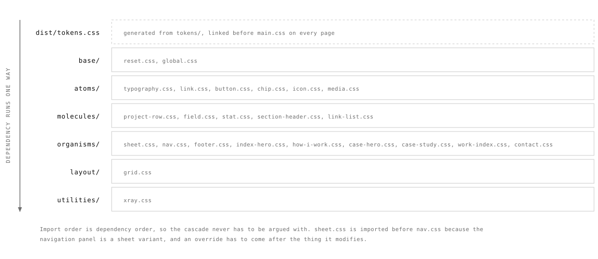
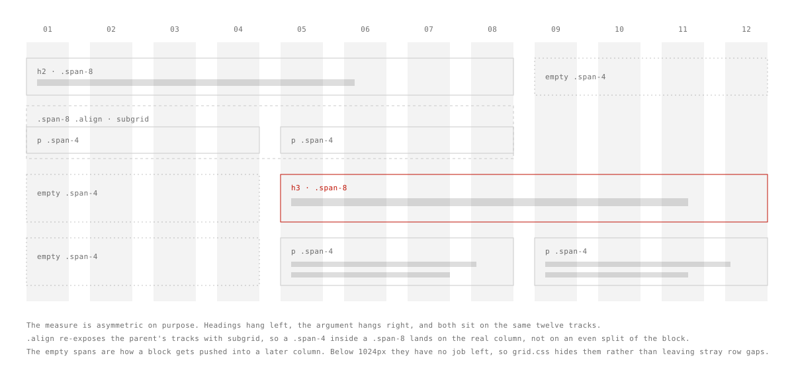
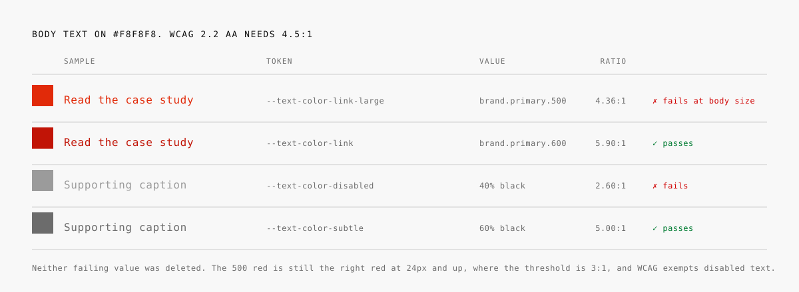

The product worked. People just didn't trust it enough to finish.
View project
hobbs.design · Rebuilding this site
I'd spent years telling people I work in systems and build what I design. The site making that case was five years of accumulated markup with the values typed in by hand. So I rebuilt it from the token layer up, in public, and left the commit history where anyone can read it.

Every page rendered. Nothing was broken in a way a visitor would notice. Underneath, the presentation layer was five years of decisions nobody had written down: a red in a Sass variable here, the same red typed as a hex there, a style attribute on a heading that needed to be slightly bigger one afternoon in 2021.
None of that is visible from the front. It is extremely visible to someone who opens DevTools, which is exactly the person this site exists for. I was applying for roles where the work is the system underneath the interface, and handing over an interface with no system underneath it.
A portfolio is usually treated as a container for the work. For design systems and design engineering roles it's also a sample of it, because the thing being hired for is the layer the visitor never sees.
That reframed the whole project. The rebuild wasn't a visual refresh with a new grid, it was a working proof that I structure decisions the way I say I do.

Before a single page was touched, every
value moved into JSON in tokens/, split across
three layers. Base holds raw hex and pixel values and is the
only layer permitted to have them. Semantic gives those values
roles, named element-property-role, so
--text-color-link reads as what it styles, which
property, in what job.
Component tokens come last, and only once a
component has earned one. Style Dictionary compiles all three
into dist/tokens.css, which every page links
before the stylesheet. The compiled file is generated, so it
is never edited by hand.

The layering does one useful thing above all
else: it turns a matter of taste into a rule you can check. A raw
hex outside tokens/base/ is a bug, and anyone can
grep for it. Nobody has to remember the convention or be senior
enough to enforce it.
The alias chain also survives compilation. Open
DevTools on any page here and
--text-color-link resolves through
--color-brand-primary-600 back to a hex, so the
reasoning is readable from the browser without reading the
source.
If a rule needs a value the semantic layer doesn't have, that means a role is missing, not that a raw value is allowed just this once.
Because every colour is a role, a second set of base values generates the whole dark theme. No stylesheet was edited to add it.
The CSS follows Atomic Design, and
main.css is nothing but imports in dependency
order. Base, then atoms, then molecules, then organisms, then
layout, then utilities. Every rule below the base layer
consumes semantic tokens and nothing else.
That order is doing real work. The sheet is imported before the nav because the navigation panel is a sheet variant, and an override has to come after the thing it modifies. Getting the sequence right means the cascade never needs to be fought with a higher-specificity selector.

The practical payoff is that everything has one
obvious address. A button problem is in
atoms/button.css, and there is nowhere else it could
be hiding. Deleting a component means deleting a file and an
import line.
Specificity stays flat as a result. Almost every selector in this site is a single class, which is what makes the whole thing safe to change quickly.
With tokens and components in place, the pages were rebuilt as assemblies. A case study is a case hero, a series of sections on the twelve-column grid, and a project row at the end. The markup describes structure, and the stylesheet owns every measurement.
Spacing is a strict 8px scale, no 4s and no 12s. If a gap isn't divisible by eight it isn't in the system, which sounds arbitrary until you stop having the conversation about whether something should be 12 or 14.

The asymmetric measure was carried over from the old site deliberately, because it was the one thing about it worth keeping. Headings hang left, the argument hangs right, and CSS subgrid makes a column inside a block line up with the real grid instead of an even split of whatever width that block happens to have.
This page is the strictest test of that, and the
reason a new stylesheet layer exists. Every case study before it
carried its vertical rhythm as a style attribute on each block.
Here the rhythm lives in
organisms/case-study.css, so the page contains no
inline styles at all.
The header is on every page, so it was the obvious component to lock first. My first pass made the markup identical everywhere but left the links alone, on the reasoning that links are content and content varies by page.
That reasoning was wrong, and it took
someone saying so to see it. A global navigation that changes
from page to page isn't global. The one variation I'd have
defended was aria-current, which says which page
you're on — and that was the thread worth pulling.
Forcing the links to match immediately turned up
two real defects. The homepage used bare fragment links that only
worked when you were already on the homepage. And it pointed
Resume straight at the PDF while eleven other pages pointed at
resume.html — one question with two answers, and no
single page could tell me which one was right.
Neither was findable by looking at any single page, because each page was internally consistent. They only surfaced when twelve pages had to agree on one answer. The PDF won, signposted so the new tab is announced rather than sprung, and the web resume kept its link from Contact.
Auditing the palette against WCAG 2.2 turned up two colours that had been on the live site the whole time. The brand red measures 4.36:1 on the page background, just under the 4.5:1 needed for body text. Muted text sat at 40% black, which measures 2.6:1 and isn't close.
Both were fixed at the value rather than the usage. Body links now take the 600 step of the ramp at 5.9:1, and muted text sits at 60% black. Neither original value was deleted, because both are still correct in the places WCAG allows them.

This is the argument for tokens that I find most
convincing. A contrast fix applied page by page is a fix with a
shelf life, because the next person to need a red will reach for
the one that looks right. Encoded as
--text-color-link, the accessible answer is also the
convenient one.
Focus is a token pair for the same reason, a 2px
near-black ring on :focus-visible defined once and
applied globally. Every page opens with a skip link, and form
errors are wired through aria-describedby and spell
out the word Error, because colour on its own isn't an
affordance.
There's a Design/Code toggle in the header
of every page. Switching it to Code outlines each element that
carries a data-xray attribute and labels it with
its layer and component name, which is how the annotations on
the drawings above were derived.
The labels aren't a diagram of the architecture, they're attached to the components themselves. If the structure ever drifts from what the labels claim, the labels start lying in public, which is a good reason to keep them true.
Every portfolio in this field says the same words about systems thinking. Almost none of them let you look. The toggle costs one stylesheet and a few lines of JavaScript, and it replaces a claim with something checkable in about two seconds.
It's also genuinely useful to me. Turning it on is the fastest way to spot a region that has quietly stopped being a component.
The rebuild lived in a v5/
folder while the old pages stayed at the domain root. For a
while that was sensible, and then it stopped being sensible,
because an outside audit pointed out that none of the new work
had ever been deployed. Real visitors were still getting the
old build.
So v5/ was promoted to the
root, the legacy pages were archived out of the working tree,
and a deploy config now copies only the paths that should be
served. The icon sprite is generated from the official
library by a script that fails loudly on a typo rather than
shipping a blank square.
I'm including this because it's the most common way a rebuild like this fails, and because leaving it out would make the story tidier than it was. The system was sound for a week before anyone outside the repo could see any of it.
The fix was boring and it was the whole difference between a nice local project and a live site.
Sixty-five commits over nine days, and the site is now the same kind of artifact as the work it describes. The visible design changed less than the amount of effort suggests, which is the correct outcome for a structural rebuild.
What changed is the cost of the next change.
A colour, a spacing step, or a type size is edited in one JSON file and rebuilt. Nothing has to be found first.
This page is new markup and one small stylesheet. Every other part of it already existed and was reused as-is.
Contrast, focus, and skip links are defaults in the token and base layers, so passing is what happens when nobody does anything special.
The source is public, the commit messages explain the reasoning, and the migration from the old build is readable in the history.
The point of building it this way is that the next few things become small. Some of them are already obvious, and a couple of them are still open problems I'd rather name than hide.
These are in the order I expect to get to them, not in order of how impressive they sound.
Every page already carries the same DOM shape for a given component, with content as the only variable. Converting the locked components into real React components is a translation job, not a redesign.
Publishing is a manual step, which is precisely how the built work went unseen for a week. Until it runs on merge, the same failure can happen again.
Contrast ratios and the no-raw-values rule are both checkable by a script. Right now they're checked by me noticing, which is the least reliable option available.
A full set of dark tokens compiles today, but nobody has sat with the result and made judgements about it. Generated is not the same as considered.
The five case studies written before this one hold their spacing in style attributes. The stylesheet that replaces them now exists, so that cleanup is a delete.
Any system is easy to keep clean in the week you build it. Whether this one still has one source of truth after a year of small edits is the only result that counts.
A finished page only shows that something was made. The sequence of decisions behind it, why a value moved layers, why a component was locked, why an accessible colour replaced a prettier one, is the part of this work that transfers to a team. That's why the source is public and why this page describes the reasoning instead of the result.